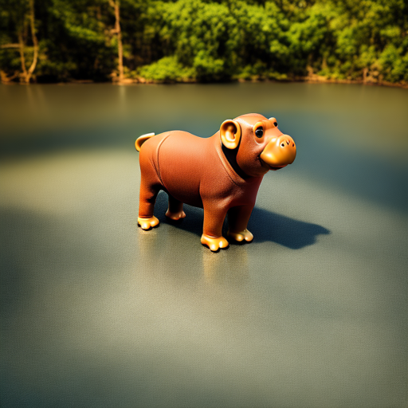

Current controls over diffusion models (e.g., through text or ControlNet) for image generation fall short in recognizing abstract, continuous attributes like illumination direction or non-rigid shape change. In this paper, we present an approach for allowing users of text-to-image models to have fine-grained control of several attributes in an image. We do this by engineering special sets of input tokens that can be transformed in a continuous manner -- we call them Continuous 3D Words. These attributes can, for example, be represented as sliders and applied jointly with text prompts for fine-grained control over image generation. Given only a single mesh and a rendering engine, we show that our approach can be adopted to provide continuous user control over several 3D-aware attributes, including time-of-day illumination, bird wing orientation, dollyzoom effect, and object poses. Our method is capable of conditioning image creation with multiple Continuous 3D Words and text descriptions simultaneously while adding no overhead to the generative process.
Finetuning: Our finetuning is divided into two stages. In the first stage, we render a series of images using different attribute values (e.g., illumination and pose). We feed them into the text-to-image diffusion model to learn token embedding [obj] representing the single mesh used for training. In the second stage, we add the tokens representing individual attributes into the prompt embedding. The two stage training allows us to better disentangle the individual attributes against [obj]. Inference: Attributes can be applied to different objects for text-to-image generation.

A [ |

A [ |
A [ |
|
A [] fox on the highway. |
A [] squirrel in the forest. |
A [] colorful bird in the wild. |
A [] owl at night. |
|
A [] chair by the lake. |
A [] chair in front of Times Square. |
|
A [] [ |
A [] [] seagull on a sand beach. |

Our method can be directly extended to perform image editing. We simply have to encode an image via a rare token with Dreambooth, then use the rare token in conjunction with our Continuous 3D Words. For the specific case of only changing orientation, we compare our results with Zero1-to-3.
@inproceedings{cheng2023C3D,
title={Learning Continuous 3D Words for Text-to-Image Generation},
author={Cheng, Ta-Ying and Gadelha, Matheus and Groueix, Thibault and Fisher, Matthew and Mech, Radomir and Markham, Andrew and Trigoni, Niki},
booktitle={arXiv},
year={2024}
}